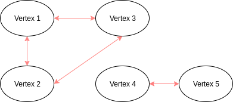

Making use of eigendecomposition to cluster data by structural similarity
We are going to derive spectral clustering in this writeup. Eventually we shall arrive at Ng-Jordan-Weiss's normalized formulation of spectral clustering
Before we proceed, we need to be aware of the following mathematical rules and identities:
Tranpose of x vector times a matrix A times the x vector is a scalar property. Now if we take derivative of this scalar with respect to a x vector, we will get a vector in the end.
If matrix A is symmetric
Then the expression would become
When we need to optimize a function of (x, y, z) while subjecting it to a constraint g. Our lagrange multiplier can be formulated as follows
We optimize by setting the gradient of our Lagrangian to zero and then solve for each variable
Now if we put the previous two ideas together, we can then proceed to optimize the following the following vector:
We wish to minimize the vector under the constraint that the dot product of the x vectors is equal to a scalar constant
So let's plug it into our Lagrangian!
Let's assume that A is a positive semi-definite matrix, it means that we will get min from function optimization and assume that A is symmetric because it will be the case in the next section when we apply this concept to spectral clustering. Now let's take the derivative with respecet to x vector and lambda:
The second derivative doesn't tell us much because it is simply re-stating the constraint, but there is something magical about the first equation. And if we re-write it, we get the following:
This is telling us, if we were to optimize the original vector we began with, we simply need to find eigenvectors of matrix A and those are the best candidates for optimizing the original vector expression.
Now, let's get down to the meat.
Suppose we are given 5 vertices, and we denote each connection with a value of 1. We can easily construct an adjacency matrix looking at like this:
We can also use a Gaussian kernel to represent the weight of each connection. So instead of 1, we can assign it a value based on distance
We also call it the weight matrix and the degree of a vertex d[i] can be defined as:
A degree matrix would look like this:
With the same given 5 vertices, we can easily visualize them to be like this
With a quick glance, it is easy to identify that there are two clusters of nodes. However, from a mathematical perspective, we need a formal way to quantify what is a group. Let's define A to be a subset of V which is the set of all vertices. A + Not A will give us V because a vertex can either be in A or not in A. For this particular example, we can say vertex 1, 2 and 3 are in A, while vertex 4 and 5 are in Not A.
We can use a vector to represent this statement and let's called it the feature vector
The objective of spectral clustering is that we want to find a feature vector such that the relationship between A and not A is at minimum. We can quantify relationship with the following expression.
In summary this is our optimization objective
Expand the previous expression
Since W is symmetric and iterating through i is the same as iterating through j. The first and last term of the expression can be shortened to the following:
The middle term can be expressed as follows:
Therefore, put everything together, the relationship can be expressed as:
And we call it the Laplacian matrix
In order to find the feature vectors such that the relationship between two or more clusters will be minimized, we simply need to find the eigenvectors of a Laplacian matrix